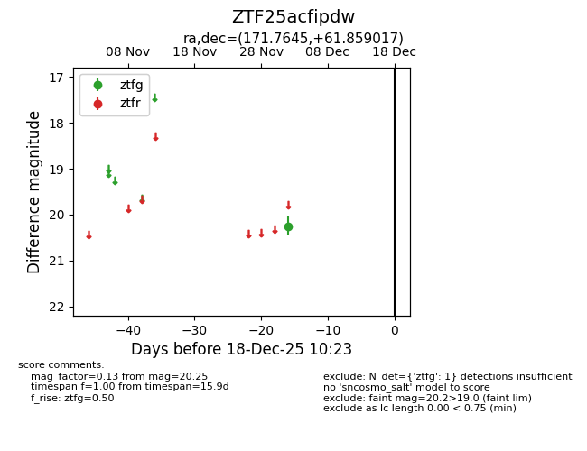
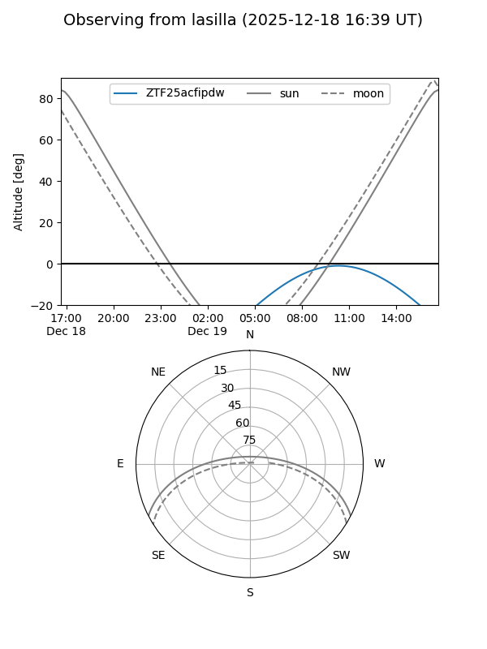
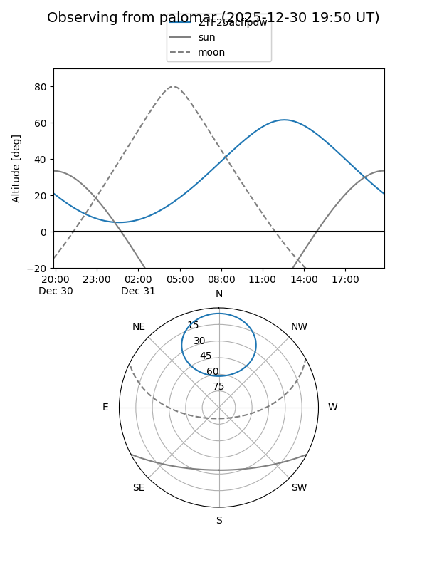

ZTF25acfipdw
Target ZTF25acfipdw at 2025-12-31 18:00
Aliases and brokers:
FINK: link
Lasair: link
ALeRCE: link
alt names
ZTF25acfipdw (ztf,fink_ztf)
Coordinates:
equatorial (ra, dec) = 171.7645,+61.85902
equatorial (HMS+DMS) = 11:27:03.49,+61:51:32.46
galactic (l, b) = (139.1360,+52.53343)
Flags:
Photometry:
last ztfg=20.25
1 ztfg detections
Lightcurve

Visibility


Additional plots